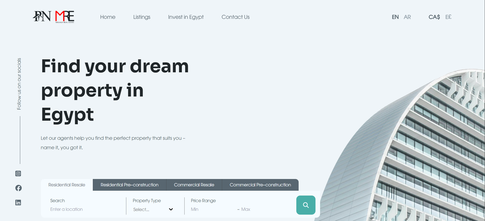
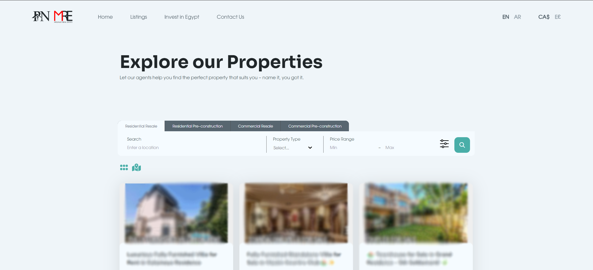
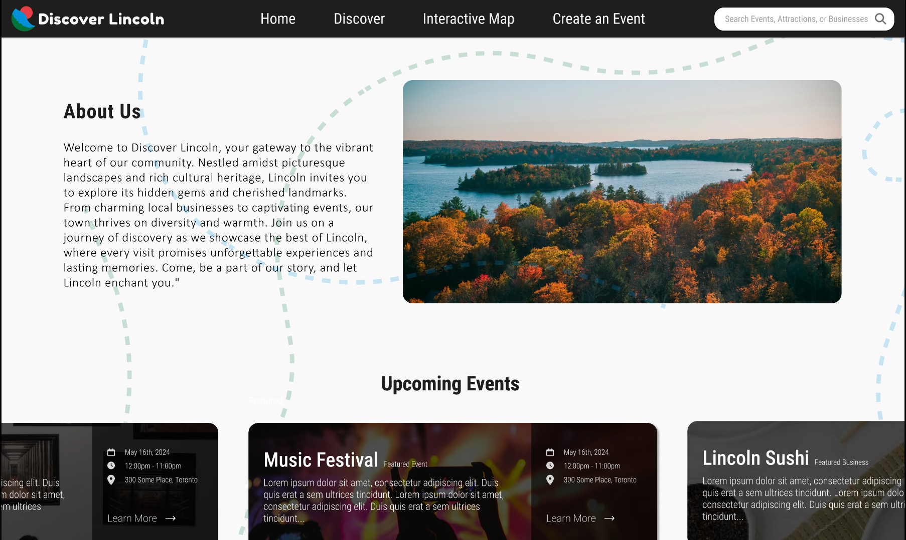
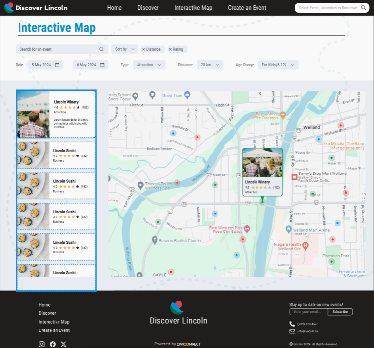
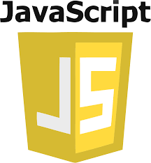
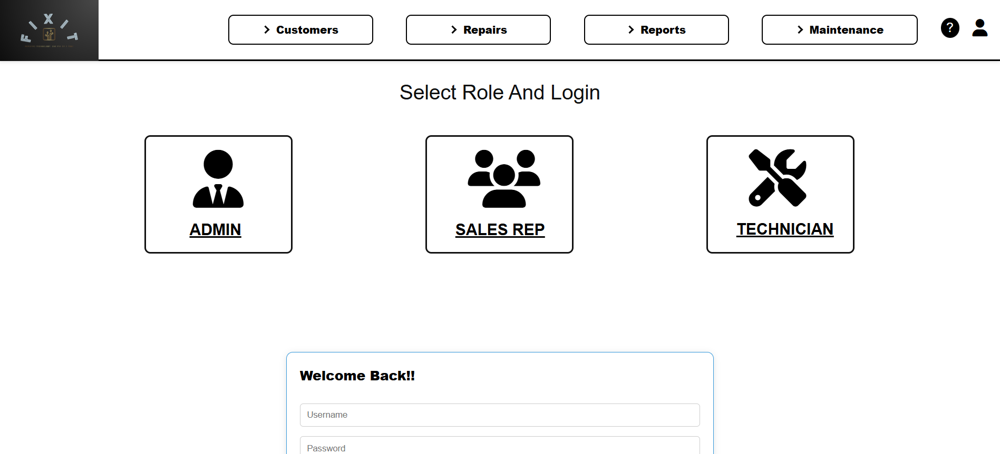
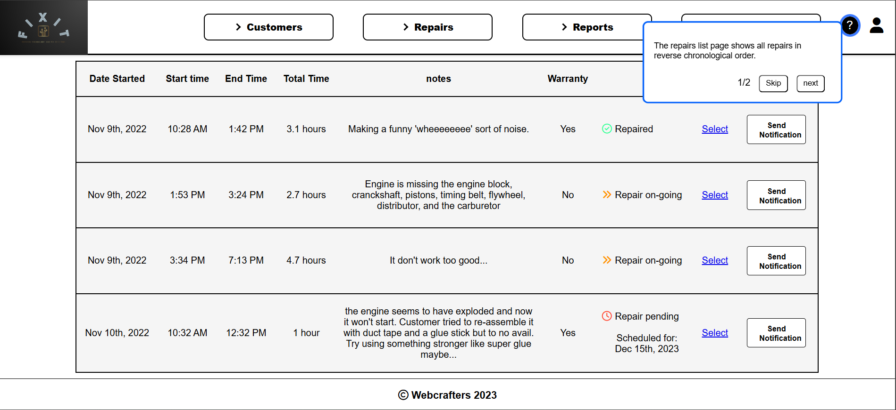

Web Development and Design
Projects relating to planning, designing, and developing websites using HTML, CSS, JavaScript, NodeJS, NextJS, and ReactJS.
Fridge Roulette

Click here to view the website
Click here to view the GitHub repository
Fridge Roulette is a recipe discovery web app designed to help users reduce food waste by finding meals based on ingredients they already have at home.
This site was built with HTML, CSS, NextJS, and NodeJS.
the application allows users to search, sort, and filter recipes by ingredient availability and complexity, while generating shopping lists for ingredients
they may be missing. The project was planned, designed, and developed independently, with a focus on creating an intuitive and responsive user experience.
A key challenge was integrating and working with a third-party recipe API containing community-submitted data with inconsistent formatting and varying levels of detail. To provide a reliable experience, I implemented custom logic to process, filter, and present recipe information in a way that remained clear and useful to users. This project highlights my experience building modern frontend applications, consuming external APIs, managing client-side state, and transforming complex datasets into user-friendly interfaces.

Property Network Egypt

*Website no longer receiving hosting support
Property Network Egypt is a real estate website developed for a property agency serving clients in Cairo, Egypt.
Built with NextJS, HTML, CSS, and JavaScript, the platform was designed to support both English and Arabic
users through a bilingual interface that dynamically adapts to right-to-left (RTL) layout standards. The site also features property
search and filtering tools, interactive map-based browsing with Mapbox, and responsive layouts optimized for a variety of devices and browsers.
As part of a professional development team, I contributed to building a scalable frontend that consumed content from a headless CMS through a REST API, enabling non-technical staff to manage and update property listings efficiently. This project strengthened my experience working with API-driven applications, implementing multilingual user interfaces, integrating third-party services, and developing user-focused features that improve navigation and content discovery.

Discover Lincoln
*This site was created for educational purposes and is not being
hosted
Discover Lincoln is mock project with the intent to design a
website to attract tourism to the town of Lincoln, Welland. This
site was built using
HTML, CSS, NextJS, and NodeJS.
Designed to be quickly and efficiently maintained using a
Content Management System, the site uses an API
to load new and updated content.


With a responsive and intuitive design, the site places emphasis on being user friendly and accessible by following W3C accessibility guidelines. This site includes an interactive map page built using Mapbox. Providing the user with a search and filter function to create an effortless user experience.
Emma's Small Engines


Click here to view the website
Emma's small engines was a collaborative school project
build to be employee facing and used to streamline customer orders
and repairs. This project involved using HTML, CSS,
and JavaScript. Made using agile methodology, the
project was completed in three sprints. Throughout these
sprints, my role was to lead communications and
coordinate team members. Additionally I coded whole pages,
custom dropdowns, and context help using the mentioned programming
languages to ensure W3C accessibility guidelines were
followed.
The site contains pages for maintaining a relational database and generating reports. There is a help feature to enhance user experience and simplfy onboarding for new employees. The site also implements user roles by restricting access to non-admin users, and allowing full access to users with authorization.
